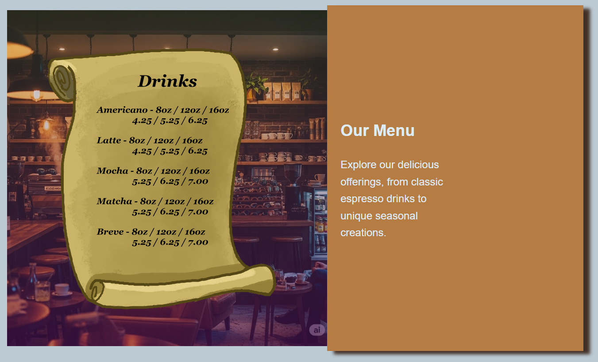

Walkerz: made with javascript
This is just a fun little game I made entirely with javascript.
I created all of the animations and wrote the code.
Play it yourself
Knificorn: made with GODOT
This is a game that I built with the game engine GODOT. I created the animation,
music, sound effects, and story. This project was for a game jam and had a two week deadline.
Play it yourself
UI elements and web design
